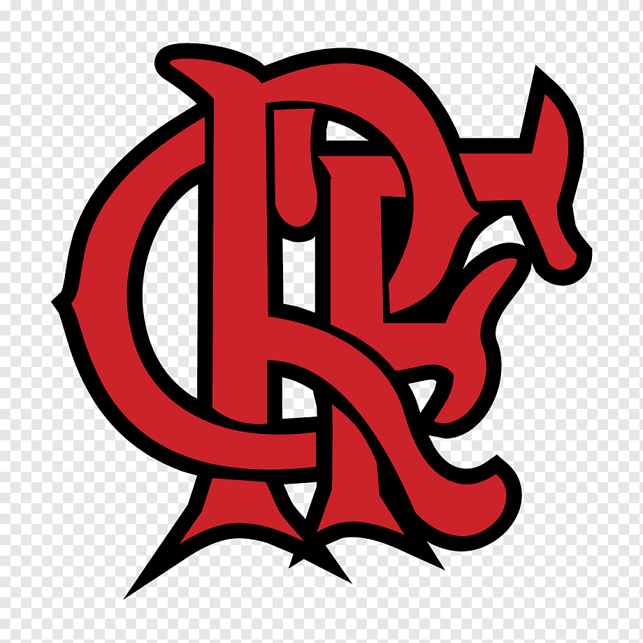
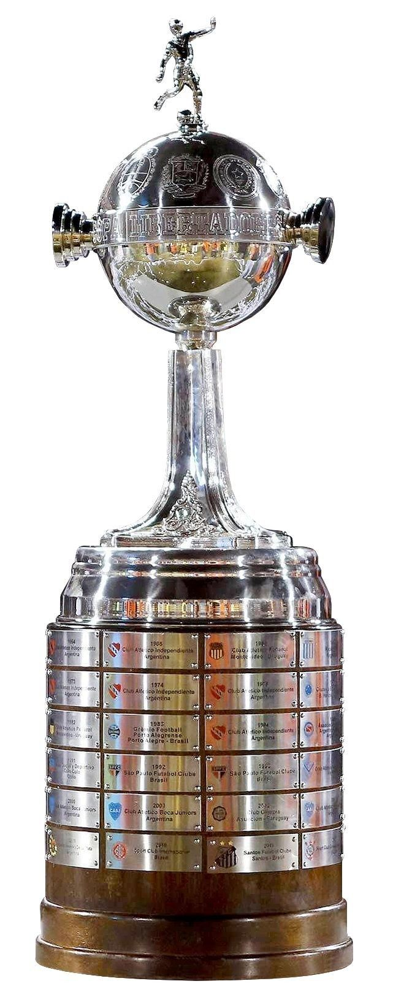
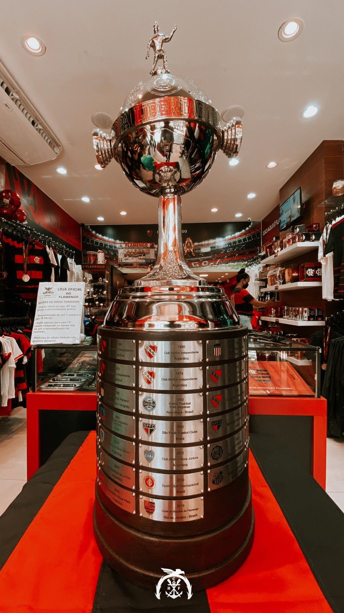

| Conexão com o clube
| Escalação dos times das conquistas da Libertadores
| Escalação do time campeão do mundo
| Fotos das taças
|
|  |
1981 - Raul; Leandro, Marinho, Mozer e Junior; Adilio, Andrade, Zico e Tita; Nunes e Lico. Técnico: Paulo Cesar Carpegiani |
Não teve título |
 |
| A emoção de ser Flamengo é incomparável e indescritível |
2019 - Diego Alves; Rafinha, Rodrigo Caio, Pablo Marí, Filipe Luís; Willian Arão (Vitinho, aos 86'), Gerson (Diego, aos 66'); Arrascaeta (Piris da Motta, aos 94'), Éverton Ribeiro, Bruno Henrique; Gabriel Barbosa. Técnico: Jorge Jesus |
Não teve título |
 |
| Eu sinto pena de quem não nasceu Flamengo, porque nunca saberá a emoção de ter o sangue preto e vermelho |
2022 - Diego Alves; Isla, Rodrigo Caio, David Luiz e Filipe Luís; Willian Arão, Andreas Pereira, Arrascaeta e Everton Ribeiro; Bruno Henrique e Gabigol - Técnico Dorival Junior |
Não teve título |
|
| Mesmo que a jornada seja longa, os dias cansativos e as partidas sofridas, apoiarei o meu Flamengo com força e coragem! |
Não teve mais títulos a partir de 2021 |
1982-Raul; Leandro, Marinho, Mozer e Junior; Adilio, Andrade, Zico e Tita; Nunes e Lico. Técnico: Paulo Cesar Carpegiani |
 |
Torcedores
- Alexandre
- Gilbert Martins
- Paulo Cesar
|